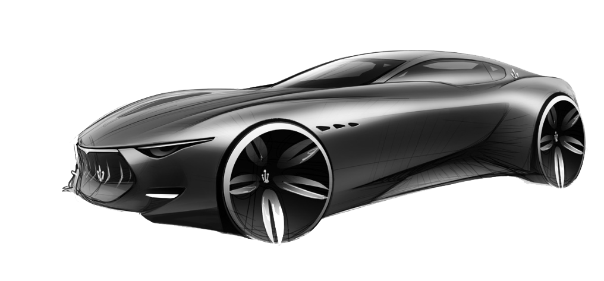

<section>
    <div class="px-4 pt-5 my-5 text-center border-bottom">
        <h1 class="display-4 fw-bold">Контрольная работа</h1>
        <div class="col-lg-6 mx-auto">
            <p class="lead mb-4">Сайт создал Петросян Гор. Сайт может показать вам всеразличнейшие машины. Также вы можете создавать собственные карточки с машинами.</p>
            <div class="d-grid gap-2 d-sm-flex justify-content-sm-center mb-5">
                <button type="button" class="btn btn-primary btn-lg px-4 me-sm-3" routerLink="/cars">Каталог</button>
                <button type="button" class="btn btn-outline-secondary btn-lg px-4" routerLink="/carAdd">Создать машину</button>
            </div>
        </div>
        <div class="overflow-hidden" style="max-height: 35vh;">
            <div class="container px-5">
                
            </div>
        </div>
    </div>
</section>